TicSol Logistics Hub
Consola de Controlo de Armazém — Gestão de Receções, Paletização e Expedição
1. Receção
A aba Receção é onde regista a chegada de encomendas do fornecedor. Permite adicionar guias de receção, verificar quantidade de artigos esperados versus recebidos, e marcar linhas como concluídas ou com divergências.
- Clique na aba Receção no topo da página.
- No painel esquerdo, vê a lista de guias pendentes de receção. Cada linha mostra o número da guia, o fornecedor e o estado (Pendente, em Receção, Concluído).
- Clique numa guia para selecioná-la. No painel direito, abre-se a lista de artigos dessa guia com as quantidades esperadas e recebidas.
- Para cada linha de artigo, introduza a quantidade que foi fisicamente recebida no campo QTD Recebida.
- Se houver danificados ou divergências, clique no ícone de alerta na linha e adicione uma observação (ex: "10 unidades danificadas").
- Quando terminar uma linha, o estado muda automaticamente para Concluído se a quantidade recebida bate certo com a esperada, ou Parcial/Divergente se houver diferenças.
- Quando toda a guia estiver processada, clique em Confirmar Receção para marcar a guia como finalizada.
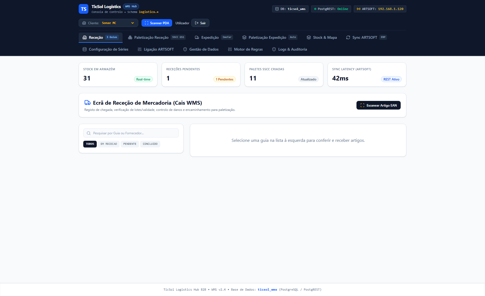
2. Paletização Receção
Após a receção dos artigos, a aba Paletização Receção permite organizar os artigos em paletes de acordo com as regras do cliente (peso máximo, altura máxima, compatibilidade de produtos). O sistema calcula automaticamente a configuração ideal da palete (camadas, caixas por camada, SSCC).
- Clique na aba Paletização Receção.
- Selecione uma Guia de Receção no dropdown e um Artigo a Paletizar.
- O sistema mostra quantas caixas foram recebidas, quantas já estão paletizadas e quantas restam pendentes.
- Introduza o número de Caixas por Camada (ex: 10) e Número de Camadas (ex: 4).
- O sistema calcula automaticamente altura total, peso e valida contra as regras do cliente (ex: máximo 150 cm altura, 1000 kg peso).
- Visualize a simulação isométrica 3D da palete à direita (mostra as camadas em cores alternadas).
- Se a configuração for válida, clique em Materializar Palete SSCC & Gerar GS1-128.
- Um código SSCC único de 18 dígitos é gerado automaticamente (ex: 3 5601234 000000012 4). A palete fica registada em "Staging" à espera de impressão da etiqueta.
- Opcionalmente, clique no ícone de impressora para abrir a janela de impressão de etiqueta GS1 (contém SSCC, EAN do artigo, lote, validade).
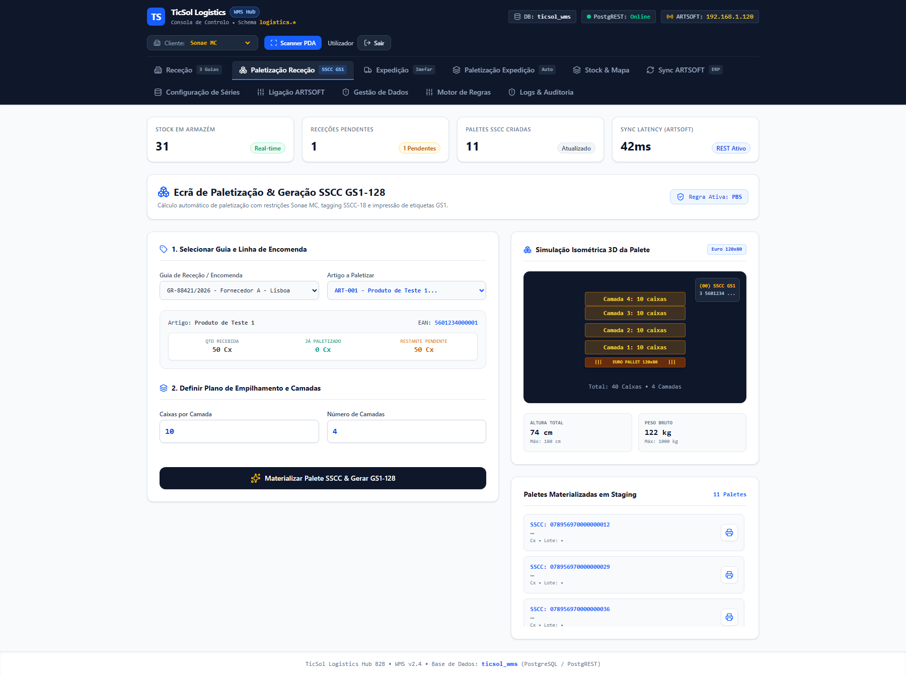
3. Expedição
A aba Expedição mostra as guias de transporte que saem para clientes. Apresenta a lista de documentos em estado de receção, detalhes do cliente (morada, NIF) e produtos incluídos. Permite sincronizar novos documentos do ARTSOFT e confirmar a palletização da carga.
- Clique na aba Expedição.
- Na secção Guias de Transporte, vê uma lista de documentos do tipo venda/guia de transporte prontos para empacar.
- Clique numa guia para ver os detalhes: cliente, morada de entrega, NIF, lista de produtos com quantidades.
- A secção Paletas mostra as paletes já preparadas para esta guia (se houver).
- Para importar novas guias do ARTSOFT, clique em Sincronizar Documentos. O sistema faz uma chamada ao servidor, carrega todos os documentos de vendas sincronizados e renova a lista.
- O estado de cada documento é mostrado em badge: Receção (ainda em picking), Em Expedição (pronto para embarque).
- Quando tudo estiver pronto, clique em Confirmar Paletização para marcar a carga como expedida.
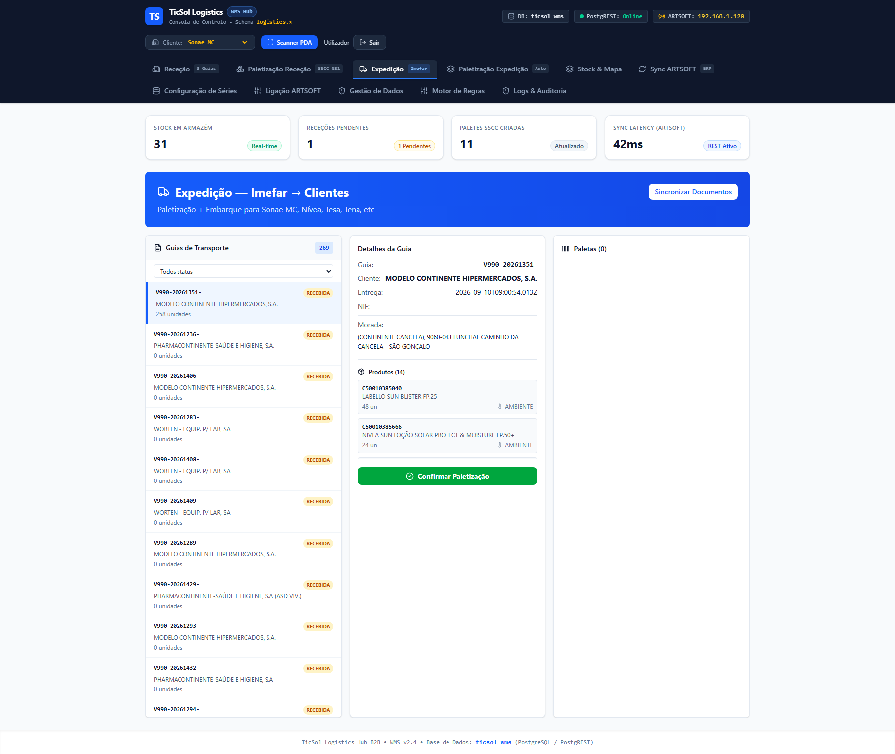
4. Paletização Expedição
A aba Paletização Expedição é semelhante à receção, mas aplica-se aos documentos de saída. Permite agrupar guias de transporte em paletes de forma automática (agrupa por temperatura, cliente, validade) e gera SSCCs + etiquetas de embarque.
- Clique na aba Paletização Expedição.
- Na secção Selecionar Guia de Transporte, escolha uma guia a partir do dropdown ou procure pelo número.
- Na secção Modo Paletização, escolha entre Mono-Produto (uma palete = um artigo) ou Packing List (Multi) (uma palete pode ter vários artigos desde que não conflitem).
- A secção Selecionar Produtos lista os artigos da guia. Marque com checkbox quais deseja paletizar nesta operação.
- Introduza Caixas por Camada e Número de Camadas.
- Visualize a simulação 3D e o peso/altura calculados.
- Clique em Materializar Palete + Imprimir Etiqueta.
- Um código SSCC é gerado, a palete é registada como "Em Expedição" e abre automaticamente a janela de impressão de etiqueta.
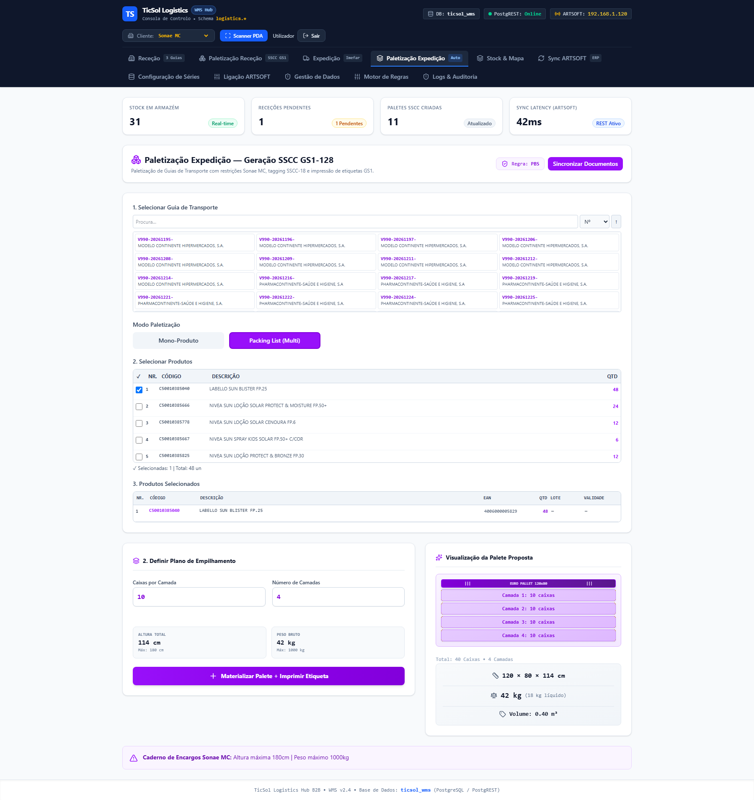
5. Stock e Mapa
A aba Stock e Mapa apresenta um mapa interativo do armazém (localização, zona, capacidade) e uma tabela completa do inventário físico. Mostra quantidade de artigos em stock, lotes, datas de validade e estado (OK, alerta, expirado).
- Clique na aba Stock & Mapa.
- No topo, vê a Gestão de Stock e Mapa de Armazém em Tempo Real com uma vista aérea interativa das localizações (zonas A, B, C com cores diferentes para temperatura).
- Clique numa localização (ex: A-01-02-1) para ver as paletes ali armazenadas.
- Abaixo, a Tabela Completa de Inventário FEFO Alert System lista todos os artigos em stock com colunas: Localização, Artigo, Lote, Data de Validade (YY-MM-DD), Quantidade (unidades), Estado (OK = verde, Alerta 30D = amarelo, Expirado = vermelho).
- Clique no dropdown Todos os Estados FEFO para filtrar (apenas OK, com alerta, expirados).
- O campo de pesquisa Filter by EAN code permite procurar por código de barras.
- A coluna Importadora RLS mostra se o stock é gerido por RLS (Row Level Security) — cada empresa vê só o seu stock.
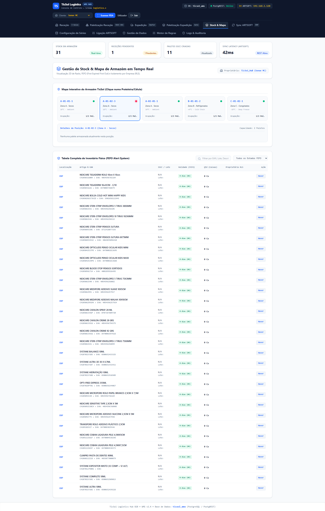
6. Sincronização ARTSOFT
A aba Sync ARTSOFT mostra o histórico de sincronizações com o sistema ARTSOFT (ERP da empresa). Permite disparar sincronizações manuais de produtos, clientes/fornecedores e guias de transporte.
- Clique na aba Sync ARTSOFT.
- No topo, vê o estado do conector: Estado do Conector (Online/Offline), Última Sincronização (data/hora), Produtos com Divergência (número de SKUs com stock diferente entre ARTSOFT e WMS).
- Clique em Sincronizar Agora para dispara uma sincronização manual completa (artigos, clientes, fornecedores, guias).
- A secção Histórico de Execuções lista todas as sincronizações executadas, com data, tipo (guias/fornecedores/produtos), estado (Concluída/Erro Funcional), número de páginas processadas e correlation ID para diagnóstico.
- Clique em Reconciliação de Stock (tab ao lado) para ver divergências detalhadas: produtos onde ARTSOFT tem quantidade diferente de WMS, percentual de diferença, se é crítico ou menor.
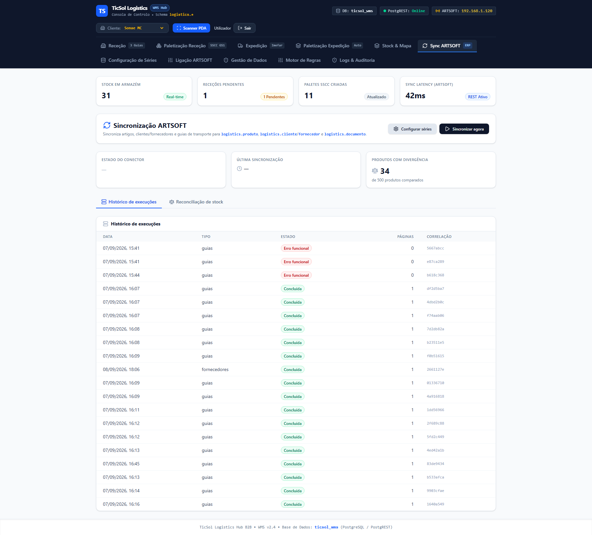
7. Configuração de Séries
A aba Configuração de Séries permite escolher quais as séries de documentos do ARTSOFT você quer sincronizar em Receção e Expedição. Séries são prefixos de documentos (ex: E001=Entradas, V960=Vendas).
- Clique na aba Configuração de Séries.
- O ecrã mostra dois painéis: Receção (esquerda) e Expedição (direita).
- Cada painel lista as séries disponíveis como checkboxes com o código (ex: E001, V960) e o nome do documento (ex: "V/FACTURA CONTINENTE", "GUIA DE TRANSPORTE").
- Marque com checkbox as séries que pretende sincronizar. Exemplo: em Receção, selecione E001, E002, F001 (Entradas e Encomendas de Fornecedores). Em Expedição, selecione V960, V962, S001 (Vendas e Saídas).
- Clique em Guardar Configuração para persistir as escolhas.
- A próxima sincronização do ARTSOFT trará apenas documentos das séries selecionadas, evitando desorganização.
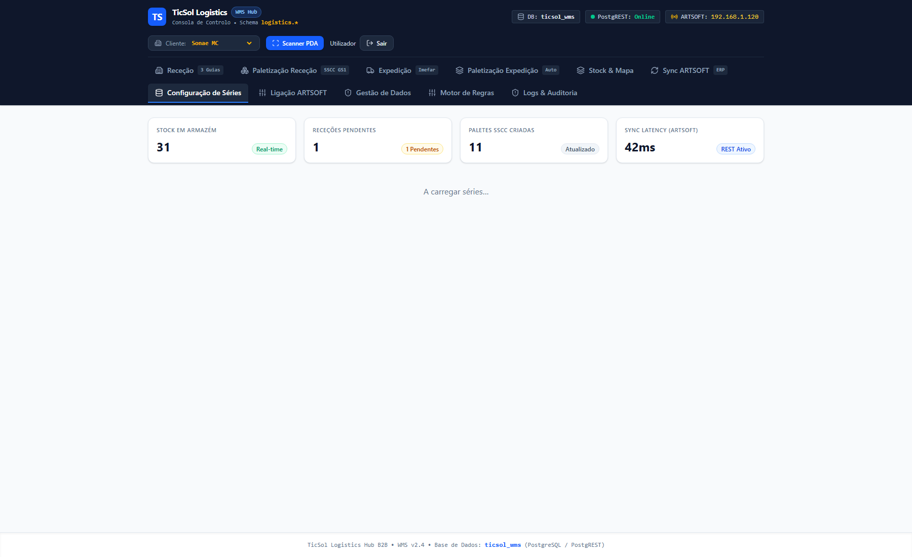
8. Ligação ARTSOFT
A aba Ligação ARTSOFT é uma interface de administração. Permite visualizar e alterar os dados de ligação ao webservice ARTSOFT (IP do host, porta, utilizador, palavra-passe).
- Clique na aba Ligação ARTSOFT.
- Vê quatro campos de entrada: Host (IP ou domínio), Porta (número), Utilizador (login ARTSOFT), Senha (deixa-se vazia se não mudar).
- Se precisar alterar algum valor, edite o campo. A senha mostra-se sempre como pontos (••••••••) por segurança.
- Se deixar o campo Senha em branco e clicar Guardar, mantém-se a anterior (para não ser obrigado a reintroduzir sempre).
- Se introduzir uma palavra-passe nova, é encriptada e guardada de forma segura na base de dados.
- Clique em Guardar Ligação para salvar as alterações.
- Se houver erro de ligação, aparece uma mensagem a indicar se o host está inacessível, utilizador inválido, ou timeout.
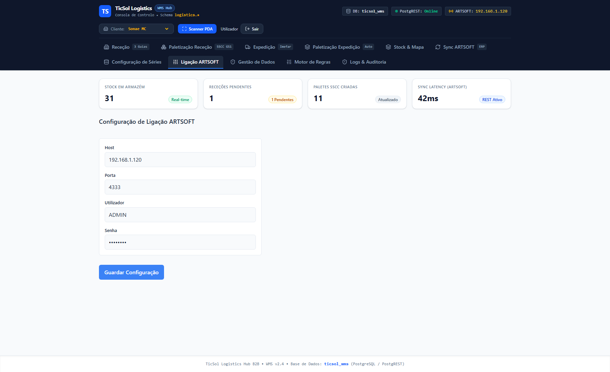
9. Gestão de Dados
A aba Gestão de Dados é para limpeza de dados de teste ou sincronização anterior. Permite apagar seletivamente documentos, stock, paletes, artigos, clientes e fornecedores — útil antes de uma resincronização completa.
- Clique na aba Gestão de Dados.
- Vê uma lista de tabelas com contagem atual de registos (ex: 612 Documentos, 395 Stock, 11 Paletes, 11027 Produtos, 1232 Clientes, 60 Fornecedores).
- Marque com checkbox quais as tabelas que quer apagar. Exemplo: se quer recarregar só os documentos, marque apenas "Documentos".
- Clique em Apagar Selecionados (N) onde N é o número de tabelas marcadas.
- Aparece um diálogo de confirmação listando exatamente o que vai ser apagado (ex: "Vais apagar 612 registos de Documentos. Ação irreversível. Podes resincronizar depois a partir do ARTSOFT").
- Confirme a operação (não há volta atrás).
- Após apagar, clique em Sincronizar Agora (na aba Sync ARTSOFT) para repor os dados.
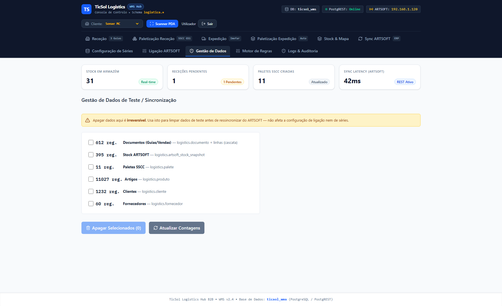
10. Motor de Regras
A aba Motor de Regras permite definir e testar as regras de negócio de paletização por cliente. Cada cliente tem limites de altura, peso, compatibilidade de produtos, tipo de palete e requisitos de etiqueta.
- Clique na aba Motor de Regras.
- Vê uma tabela com regras já criadas para clientes (ex: Sonae MC, Jerónimo Martins, etc).
- Clique numa linha de regra para expandir e ver os detalhes: Altura máxima (ex: 180 cm), Peso máximo (ex: 1000 kg), Obriga lote único (sim/não), Obriga produto único (sim/não), Tipo de palete (EUR 120x80, ISO 120x100, CHEP Blue).
- Cada regra pode ter Condições (ex: aplicar só a categoria "congelados") e Efeitos (ex: etiqueta em posição topo-direita, com filme, 2 cópias).
- Para criar uma nova regra, clique em Adicionar Regra (se disponível).
- As regras são aplicadas automaticamente quando paletiza em Paletização Receção/Expedição — se violar um limite, o sistema avisa.
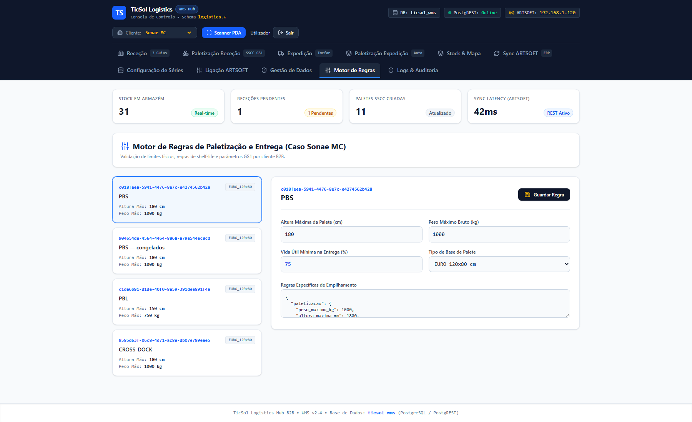
11. Logs e Auditoria
A aba Logs e Auditoria regista todas as ações executadas na aplicação (receções, paletizações, sincronizações, alterações de configuração). Útil para rastreamento, investigação de erros e conformidade.
- Clique na aba Logs & Auditoria.
- Vê uma tabela com colunas: Data/Hora, Operador (utilizador), Ação (ex: "Receção Confirmada", "Palete Criada"), Tabela Afetada (ex: documento, palete), Detalhes JSON (informação contextual).
- Clique numa linha para expandir e ver os detalhes completos (IDs, valores antigos/novos, IP de origem).
- Use o campo de pesquisa para filtrar por operador, ação ou data.
- Os logs são imutáveis — servem para auditar quem fez o quê e quando, inclusive por motivos de segurança e rastreabilidade de produto.
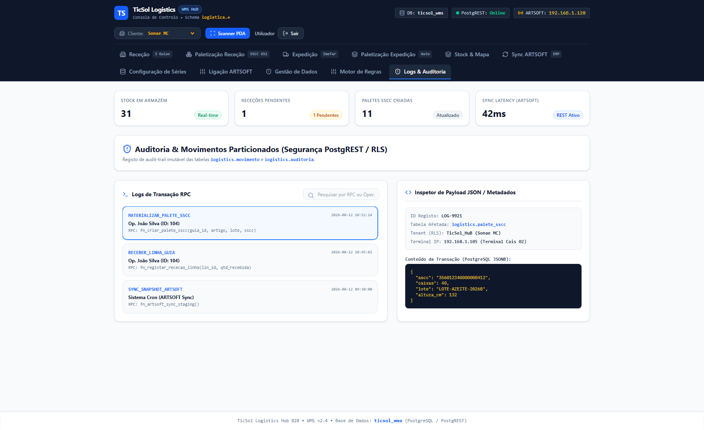
Contacte o Suporte TicSol: Para questões sobre utilização, sincronização com ARTSOFT, ou configuração de regras, contacte a equipa de operações.
Última atualização: 10 de Setembro de 2026